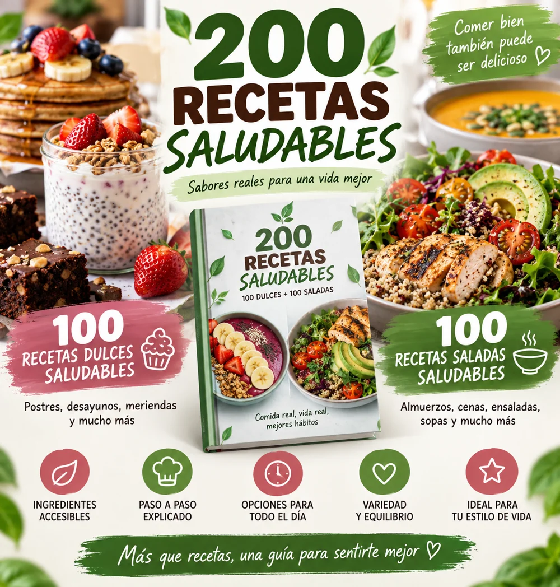

DESAYUNO
Tortitas de avena y plátano
20 min · 2 porciones
Desayunos, meriendas y postres en un PDF en español. Con ingredientes, cantidades y preparación paso a paso, sin perder tiempo buscando recetas sueltas.
100 RECETAS DULCES · PDF EN ESPAÑOL
Pago único · Producto digital · Pago en Hotmart
 109 páginas
109 páginas
No necesitas guardar más recetas sueltas. Necesitas ideas organizadas, claras y listas para consultar cuando llegue el antojo.
No sabes qué preparar para variar tus desayunos y meriendas.
Encuentras recetas, pero les faltan cantidades o instrucciones claras.
Pierdes tiempo buscando una idea diferente cada vez.
Páginas reales del recetario: ingredientes, cantidades, tiempo y preparación en un formato fácil de leer.
20 min · 2 porciones

30 min · 12 galletas

15 min de preparación + congelación · 6 polos
Elige según tu antojo, el tiempo disponible o los ingredientes que tengas en casa.
Una receta por página, organizada por categoría.
Todo lo necesario antes de empezar a cocinar.
Instrucciones numeradas, tiempo y porciones.
Para consultar desde el móvil, tableta u ordenador.
Elige el recetario que mejor encaje con lo que quieres cocinar.
SOLO DULCES
Desayunos, meriendas y postres explicados paso a paso.
Compra segura en Hotmart

AÑADE TAMBIÉN TUS COMIDAS SALADAS
100 dulces + 100 saladas para tener ideas desde el desayuno hasta la cena.
Por 1,91 € más, añade 100 recetas saladas.
Pago único · Acceso digital
Precios de referencia en euros. Hotmart muestra la moneda, los cargos aplicables y el importe final antes de pagar.
Producto digital. No se envía un libro físico.
Por 5,99 € tienes el recetario de 100 dulces. Por 7,90 €, el pack añade 100 recetas saladas. Los importes finales y la moneda se muestran en Hotmart antes de pagar.
Es un producto digital. Después de la confirmación de la compra, recibirás las instrucciones de acceso de Hotmart en el correo utilizado al comprar. Revisa también la carpeta de spam.
Sí. El contenido del recetario está íntegramente en español.
Sí. Puedes abrir el archivo en dispositivos compatibles con PDF, como móvil, tableta u ordenador.
Incluye 100 recetas dulces y 100 recetas saladas. La opción de 100 incluye únicamente las recetas dulces.
No. Es un producto digital y no se realiza ningún envío físico.
Elige tu opción y ten todas las recetas organizadas en un solo lugar.
VER LAS OPCIONES